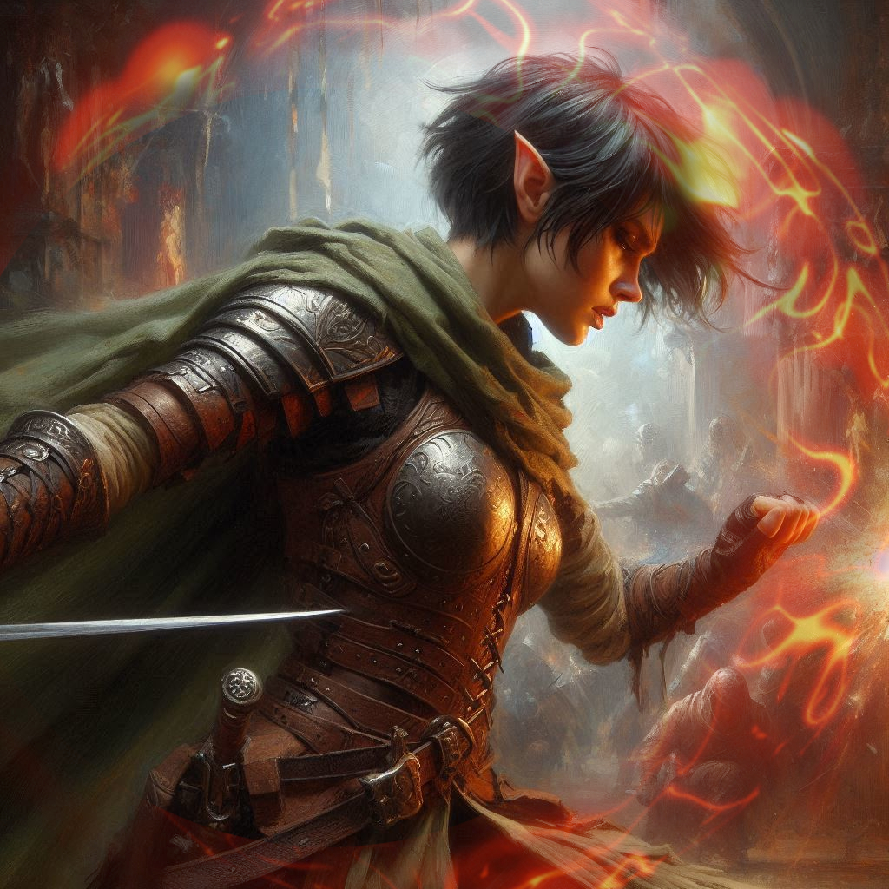
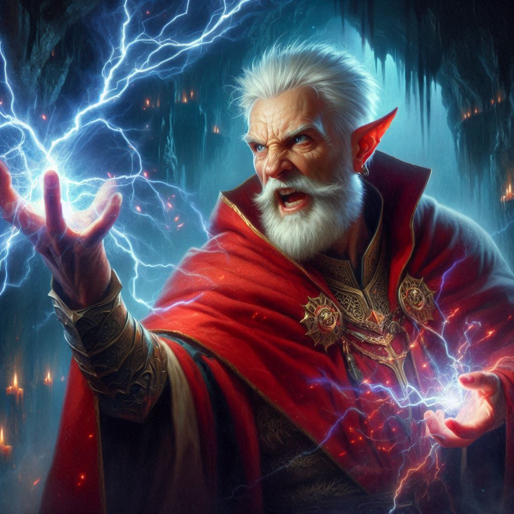

The Last Stand
You grip your sword tightly, feeling the pulse of dark magic thick in the air as Baider steps up beside you. Varis, the Minister of Trade, now stands before the portal to the Realm of Shadows, dark energy coiling around him like smoke. You exchange a glance with Baider, and he nods—a fierce, unspoken understanding passing between you both. There’s no turning back.
Varis sneers as he watches you and Baider prepare to attack. His eyes glow a dark violet, his form strangely ethereal, as if the shadows are already claiming him. "You think you can stop me?" he taunts, waving a hand to summon his dark elf guards. A dozen figures emerge from the darkness, their eyes cold, their weapons gleaming. They spread out in a half-circle, boxing you in, as Varis opens his arms in mock invitation.
"You’ve overreached," Baider growls, his voice like gravel. He lunges forward, his massive hammer smashing through the air with a battle cry that echoes across the cavern. You’re right beside him, your sword raised high. The first two dark elves leap at you, quick and deadly. You parry one strike, deflecting the blade, and counter with a swift, upward slash. It lands true, the dark elf crumpling before you. But the second elf advances, sidestepping your blade and drawing a line of searing pain across your arm.
Ignoring the wound, you bring your sword up again, catching the dark elf with a quick jab. Baider roars, his axe carving a path through two more of the elves, their dark armor splintering under his force. But for every guard you and Baider strike down, two more seem to appear, relentless in their assault.
Varis watches your struggle with a sinister smile, his hands weaving complex symbols in the air. Shadowy tendrils snake out from his fingertips, swirling around him as he chants in an ancient, guttural tongue. The air grows colder, each word he speaks dripping with malevolence. The portal crackles, its dark maw opening wider, a vast, empty void that threatens to consume everything in its path.
Baider shouts, his voice thick with fury, as he throws himself toward Varis. “You will pay for what you've done!” He swings his axe with all his might, aiming for the minister’s head. But with a flick of his wrist, Varis deflects the blow, a shield of dark energy shimmering around him. Baider stumbles back, his face twisted with frustration.
You try to follow up with your own attack, darting forward to slash at Varis’s exposed side. But the dark magic ripples outward, repelling you like a wave crashing against rock. You stumble, struggling to keep your footing. The elves close in, forcing you and Baider back against the cavern wall.
Varis laughs, a low, chilling sound that echoes throughout the caverns. “You’re both insects, squirming under the heel of fate.” He raises his hand, and a bolt of dark magic erupts from his palm, streaking toward you. You barely dodge, the spell grazing your shoulder. Pain sears through you, almost numbing in its intensity, but you grit your teeth, refusing to give him the satisfaction of a scream.
Beside you, Baider lets out a ragged breath, his strength waning. You can see him faltering, his old wounds catching up to him as he fends off three elves at once. The dark elves press closer, their faces blank, merciless. Blood trickles from a wound on Baider’s brow, yet he holds his ground, teeth bared, swinging his axe with every ounce of strength left in him.
In a final desperate surge, you and Baider lunge at Varis together, hoping to overwhelm him with sheer force. But Varis’s laughter grows darker, more mocking. He mutters an incantation, and suddenly, your limbs feel as though they’re bound by invisible chains. You struggle, but the shadows only tighten, holding you in place as the dark elves close in.
Baider meets your eyes, his face twisted with regret and fierce pride. “Kira… it’s been an honor,” he says, voice choked with emotion.
You can barely respond, the weight of the shadows pressing down on you. But you manage a single nod, a tear slipping down your cheek. In that moment, you realize the true cost of this fight, the weight of what you’ve both sacrificed.
With a final, defiant roar, Baider throws himself at Varis, his axe raised high. But Varis waves his hand, and a bolt of dark energy strikes Baider square in the chest. He staggers, his eyes wide with shock, before collapsing to his knees. His hammer clatters to the ground, and with a heavy exhale, he falls.
The last thing you see as darkness claims you is Varis’s triumphant smile, the portal to the Realm of Shadows yawning open behind him, pulling everything into its endless void.
Your last thought is of Elias and the hope that somehow, someone will remember your fight.